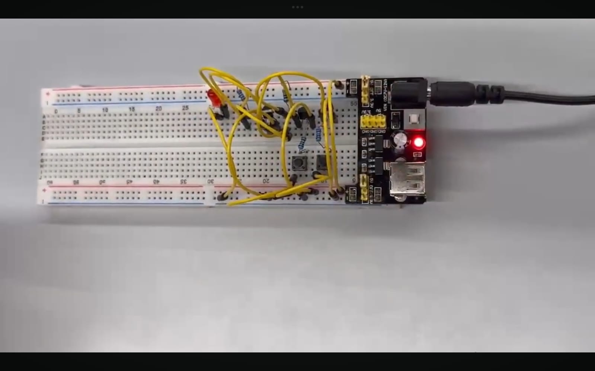
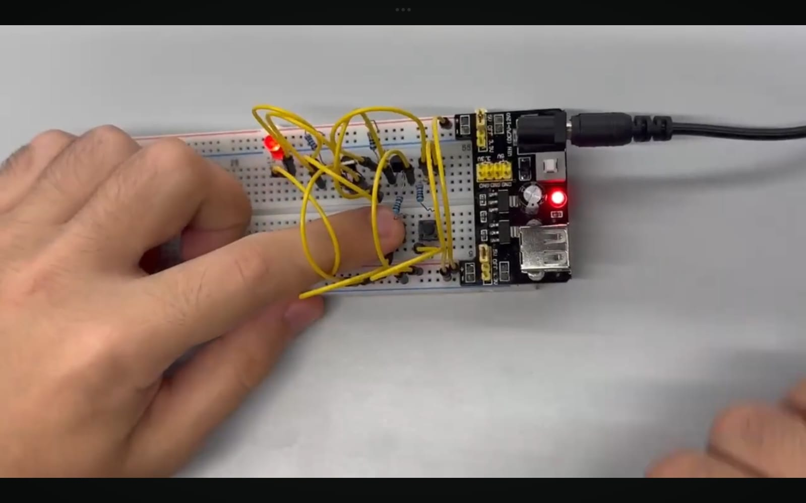

PROJECT 01 · DIGITAL LOGIC
Logic Gates
For Project 1, I explored three fundamental digital logic gates: AND, OR, and NOT. These gates process binary inputs (0 and 1) and produce outputs according to specific logical rules.
I worked with a physical breadboard circuit containing electronic components, jumper wires, switches, resistors, and LEDs. This allowed me to observe how logical operations can be represented through a physical system.
The project helped me understand the connection between Boolean logic and the basic principles behind digital electronics.
